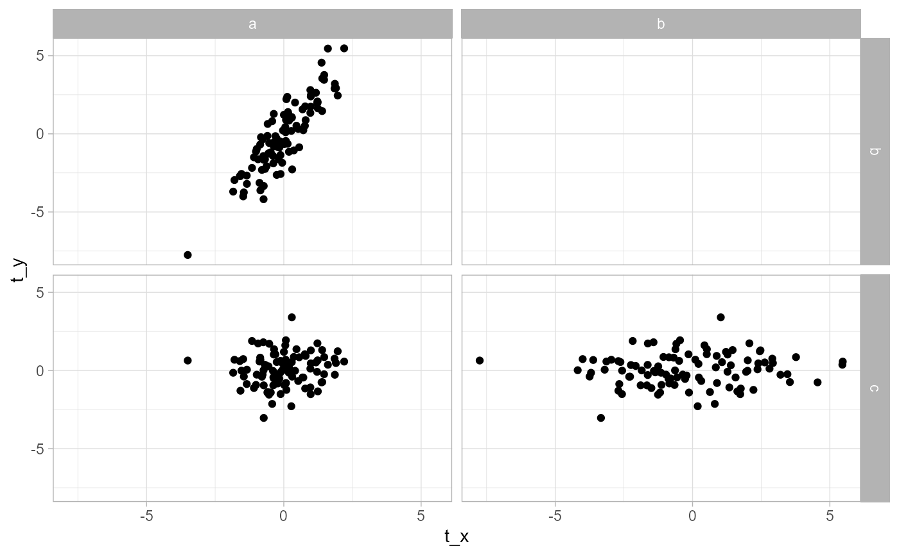
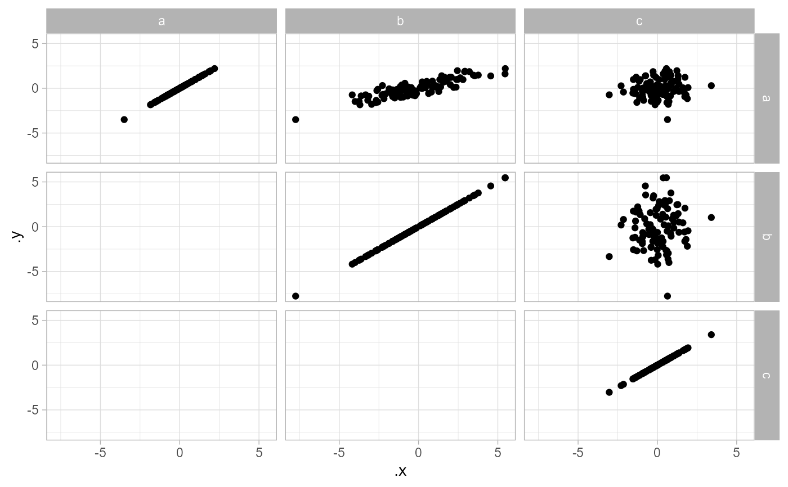
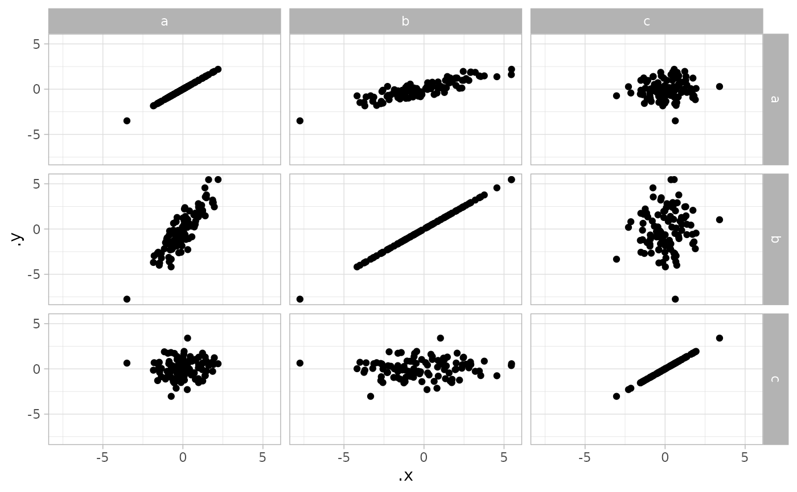
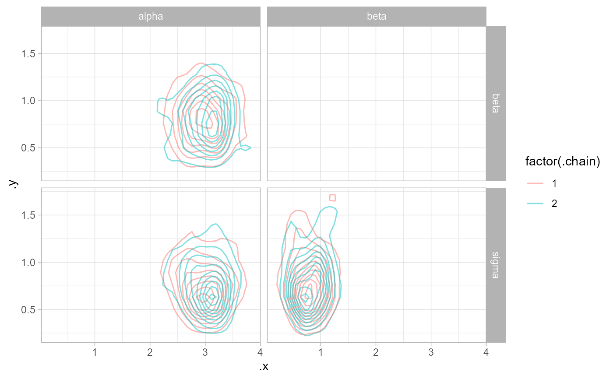
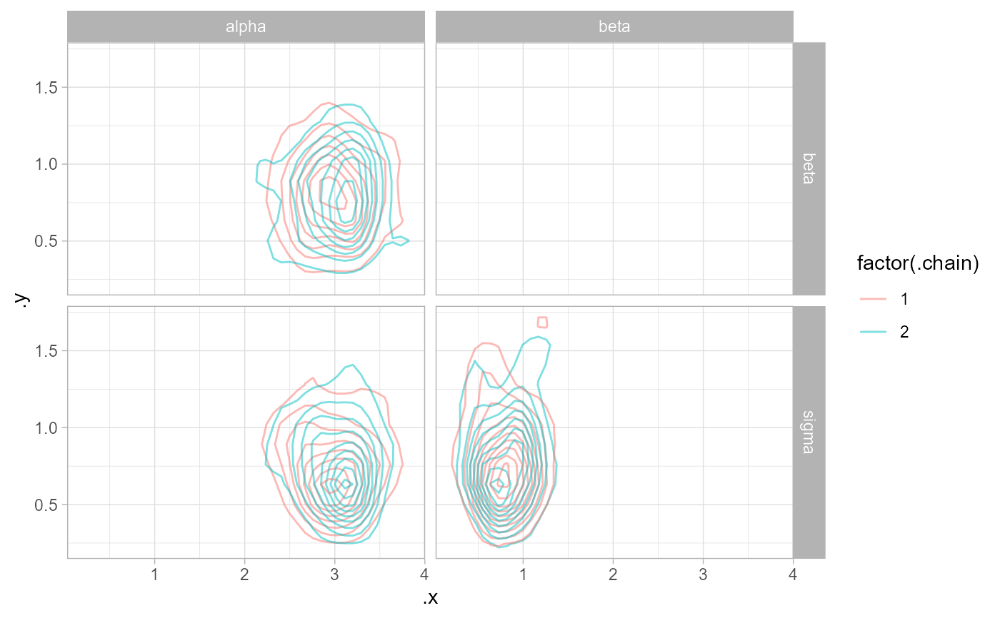

Gather pairwise combinations of values from key/value columns in a long-format data frame
Source:R/gather_pairs.R
gather_pairs.RdFast method for producing combinations of values in a value column for different levels of a key column, assuming long-format (tidy) data with an equal number of values per key. Among other things, this is useful for producing scatter-plot matrices.
gather_pairs(
data,
key,
value,
row = ".row",
col = ".col",
x = ".x",
y = ".y",
triangle = c("lower only", "upper only", "lower", "upper", "both only", "both")
)Arguments
- data
Tidy data frame.
- key
Bare name of column in
datacontaining the key .- value
Bare name of column in
datacontaining the value.- row
Character vector giving the name of the output column identifying rows in the matrix of pairs (takes values of
key).- col
Character vector giving the name of the output column identifying columns in the matrix of pairs (takes values of
key).- x
Character vector giving the name of the output column with x values in the matrix of pairs (takes values of
value).- y
Character vector giving the name of the output column with y values in the matrix of pairs (takes values of
value).- triangle
Should the upper or lower triangle of the matrix of all possible combinations be returned? The default,
"lower only", returns the lower triangle without the diagonal;"lower"returns the lower triangle with the diagonal ("upper"and"upper only"operate analogously),"both"returns the full set of possible combinations, and"both only"returns all combinations except the diagonal.This method is particularly useful for constructing scatterplot matrices. See examples below.
Value
A tidy data frame of combinations of values in key and value, with columns row
and col (default names ".row" and ".col") containing values from key,
and columns y and x (default names ".y" and ".x") containing values
from value.
See also
Examples
# \donttest{
library(ggplot2)
library(dplyr)
t_a = rnorm(100)
t_b = rnorm(100, t_a * 2)
t_c = rnorm(100)
df = rbind(
data.frame(g = "a", t = t_a),
data.frame(g = "b", t = t_b),
data.frame(g = "c", t = t_c)
)
df %>%
gather_pairs(g, t, row = "g_row", col = "g_col", x = "t_x", y = "t_y") %>%
ggplot(aes(t_x, t_y)) +
geom_point() +
facet_grid(vars(g_row), vars(g_col))

df %>%
gather_pairs(g, t, triangle = "upper") %>%
ggplot(aes(.x, .y)) +
geom_point() +
facet_grid(vars(.row), vars(.col))

df %>%
gather_pairs(g, t, triangle = "both") %>%
ggplot(aes(.x, .y)) +
geom_point() +
facet_grid(vars(.row), vars(.col))

data(line, package = "coda")
line %>%
tidy_draws() %>%
gather_variables() %>%
gather_pairs(.variable, .value) %>%
ggplot(aes(.x, .y)) +
geom_point(alpha = .25) +
facet_grid(vars(.row), vars(.col))
 line %>%
tidy_draws() %>%
gather_variables() %>%
gather_pairs(.variable, .value) %>%
ggplot(aes(.x, .y, color = factor(.chain))) +
geom_density_2d(alpha = .5) +
facet_grid(vars(.row), vars(.col))

# }
line %>%
tidy_draws() %>%
gather_variables() %>%
gather_pairs(.variable, .value) %>%
ggplot(aes(.x, .y, color = factor(.chain))) +
geom_density_2d(alpha = .5) +
facet_grid(vars(.row), vars(.col))

# }